We will be using finite-difference equations mainly for modeling physical processes. It turns out that the way forward is not to make the function \(g(x)\) more complicated in \(x_{n+1} = g(x_n)\) but instead to add more state variables. In this course, we’ll deal with states with two quantities, \((x, y)\), which can be called a two-dimensional state. The systems we will study will involve two dynamical functions, each of which takes both \(x\) and \(y\) as arguments. That is: \[x_{n+1} = f(x_n, y_n)\\ y_{n+1} = g(x_n, y_n)\]
For instance, here is one such system: 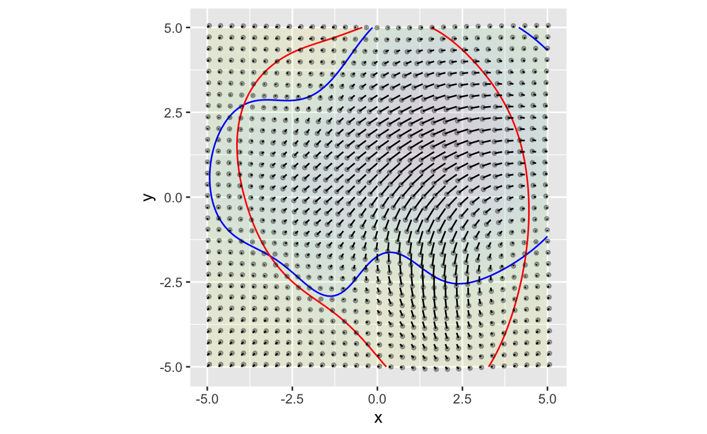 The functions \(f(x,y)\) and \(g(x,y)\) are represented by short line segments with a tiny dot at one end. Each line segment connects \((x_n, y_n)\) to \((x_{n+1}, y_{n+1})\), with the dot at the \(n+1\) end.
Consider the line segment that starts at \((0,0)\). The end of the line segment is at about \((-0.101, -0.163)\). (You can’t see such precision from the graph, but the author can!) This is just to say that for the particular \(f()\) and \(g()\) being displayed, \[f(0, 0) = -0.101\ \ \ \mbox{and}\ \ \ g(0,0) = -0.163\] The result of the dynamics is to take a state of \((0,0)\) a bit to the “southwest,” to \((-0.101, -0.163)\). From there you can take the next step, then the one after that, and so on to approximate the trajectory. It’s very much like the state was being blown around in the wind, with the line segments indicating the direction and speed of the wind at any point.
The blue and red contour lines are added to the picture to help the viewer spot fixed points. The blue contour line is the zero contour of \(f(x,y) - x\). Similarly, the red contour line is the zero contour of \(g(x,y) - y\).
The left panel below shows the dynamics of \(x\): that is \(x_{n+1} = f(x_n,y_n)\). The right panel shows the \(y\) dynamics: \(y_{n+1} = g(x_n,y_n)\).
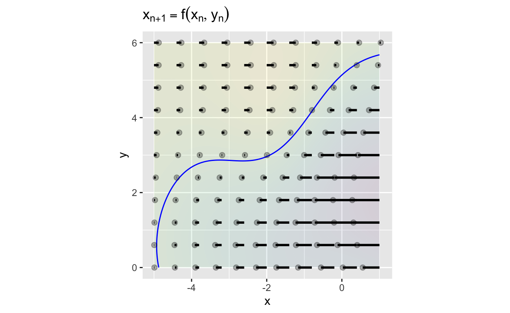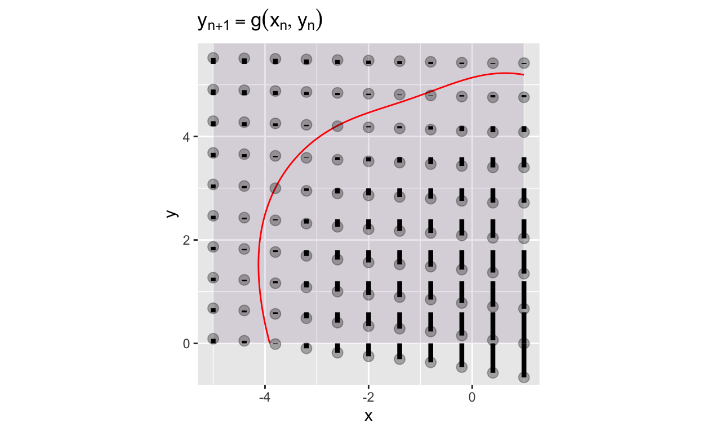
Note that in the x-dynamics plot, we’re only seeing the change in \(x\). That’s why the line segments are all horizontal: they connect \(x_n\) to \(x_{n+1}\). The blue contour shows the points where \(x_{n+1} = x_n\): The line segment is just a dot. For this particular \(f(x,y)\) the segments starting at places to the right of the contour point to the left; the segments starting to the left of the contour point to the right. At the contour, the segments point neither left nor right: they are fixed points with respect to \(x\).
The right panel is similar, but shows the dynamics of \(y\). Since the plot shows only the change in \(y\), the segments are all oriented in the \(y\) direction. For this particular \(g(x,y)\), segments above the contour point upward, segments below the contour point downward, and segments on the contour show no change in \(y\).
The original graph shows both the \(x\) and \(y\) dynamics simultaneously. Where the blue and red contours cross, there is a fixed point in both \(x\) and \(y\). You can see 3 such fixed points (with a fourth suggested near the top of the graph).
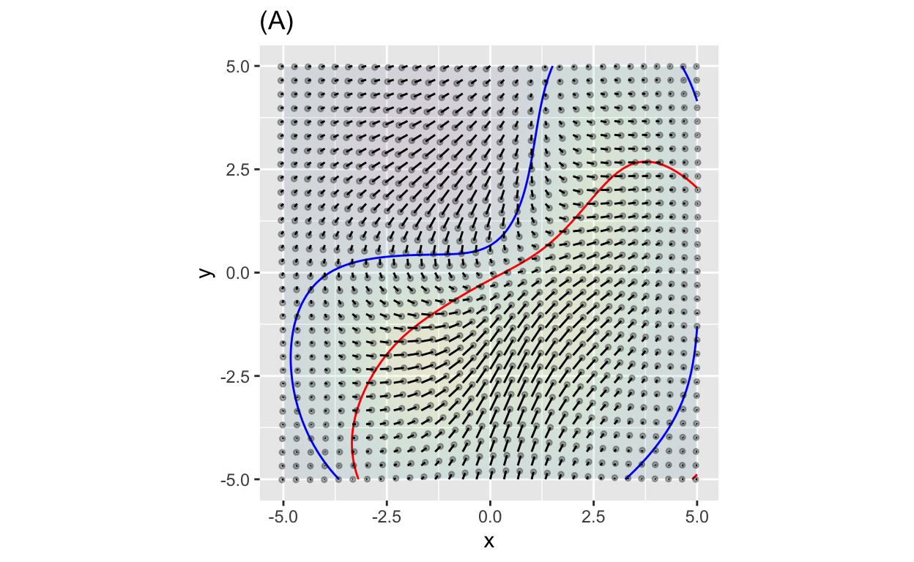
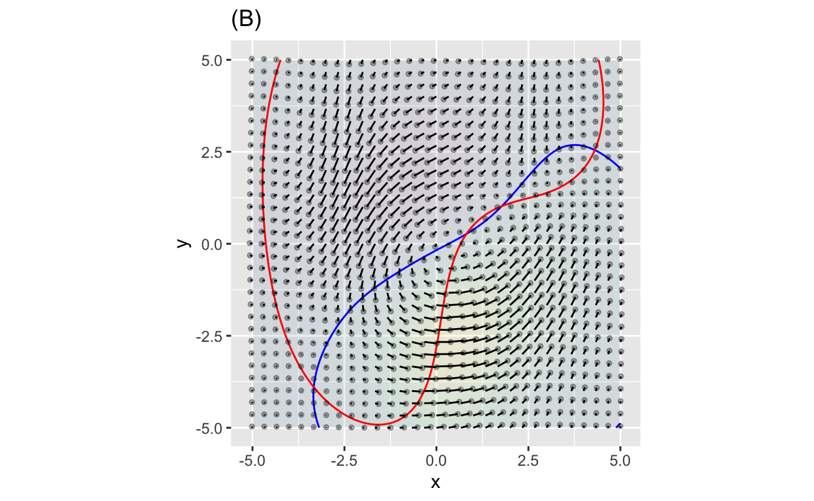
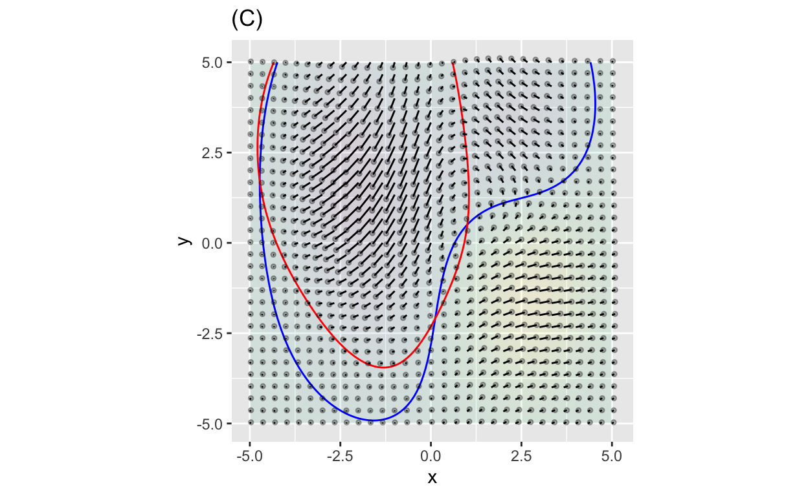
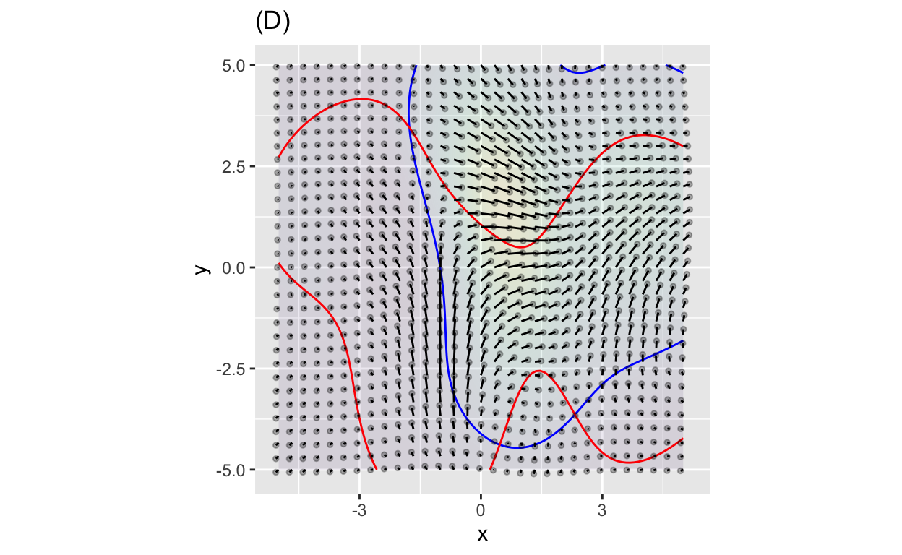
The state of a dynamical system often consists of multiple components. To illustrate, consider this problem from the 1202 book Liber Abaci (“Book of the Abacus”):
A certain man put a pair of rabbits in a place surrounded on all sides by a wall. How many pairs of rabbits can be produced from that pair in a year if it is supposed that every month each pair begets a new pair which from the second month on becomes productive?
Let \(x_n\) be the number of pairs of breeding rabbits in month \(n\). From the problem statement, we have an initial condition: \(x_0 = 0\). And let \(y_n\) be the number of baby rabbit pairs born in month \(n\). The number of babies \(y_n\) in month \(n\) comes from the number of breeding pairs in month \(n-1\), that is \[y_{n} = x_{n-1}\] This equation reads, “The number of baby rabbit pairs born this month is equal to the number of breeding pairs last month.” But we can write exactly the same relationship as \[y_{n+1} = x_n\] that is, “The number of baby pairs born next month depends on the number of breeding pairs this month.”
In month \(n+1\) the number of breeding rabbits will be those who were already breeders in month \(n\) as well as the babies from the previous month who have become breeders for month \(n+1\). This gives us the system of two equations \[x_{n+1} = x_n + y_n\\y_{n+1} = x_n \ \ \ \ \ \ \ \]
We still need an initial condition on the number of pairs of baby rabbits. Liber abaci doesn’t mention any babies in month 0, so we’ll say \(y_0 = 0\).
The sandbox … I mean, rabbit hutch … below gives an R function that implements the initial state (\(n=0\)) and the dynamics for computing the next state from the initial state.
Note that in the computer code we need just one dynamical function even though there are two components to the state vector. That function, f(x,y) returns both components of the next state. The c() function puts its two arguments into a single vector.
When using Iterate(), you may be interested just in the starting few rows or the last few rows, and don’t want to display all the rows. In R, you can use head(), which keeps only the first several rows. To look at the last several rows instead, use tail(). You can specify how many rows youy want by giving an argument to either head() or tail(), for instance head(15) will keep the first 15 rows of the trajectory.
In the code chunk, we’re using a special CalcZ function: head_and_tail(). You can probably figure out for yourself what that does.
# The dynamics
f <- function(x, y) {
c(x + y, x)
}
state0 <- c(1, 0)
Iterate(f, x0 = state0, n = 20) %>%
head_and_tail(5)Consider the two-dimensional finite-difference equation shown in the graph:
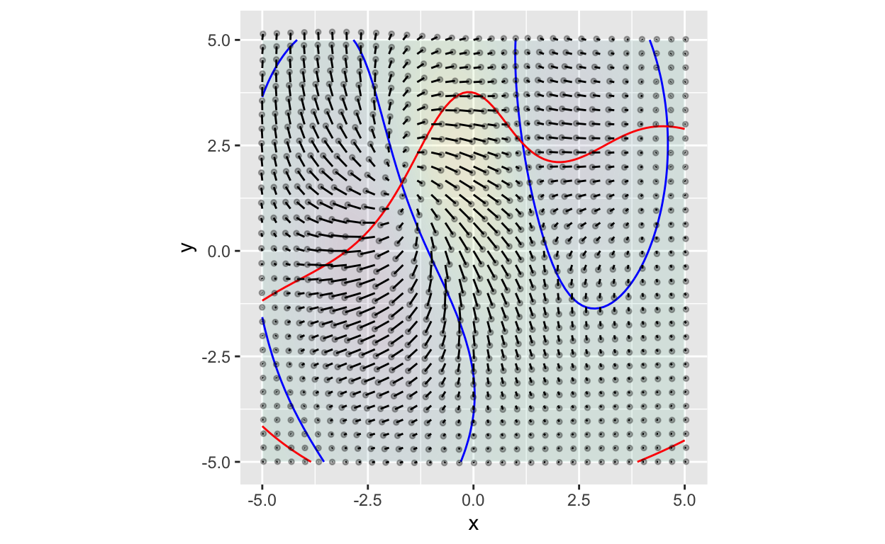
There are three fixed points visible. The next plots zoom in on each of the fixed points.
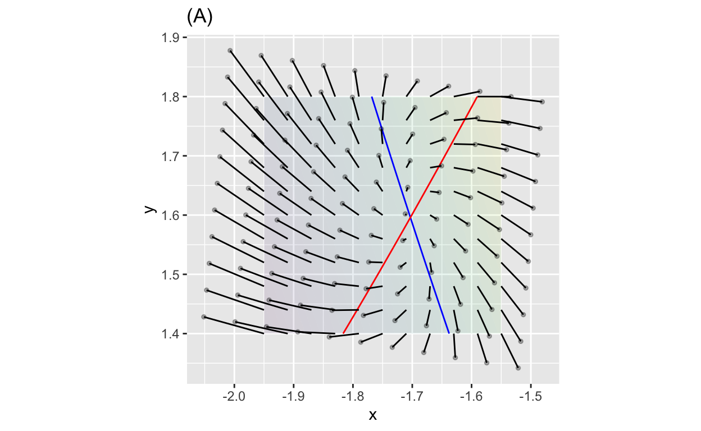
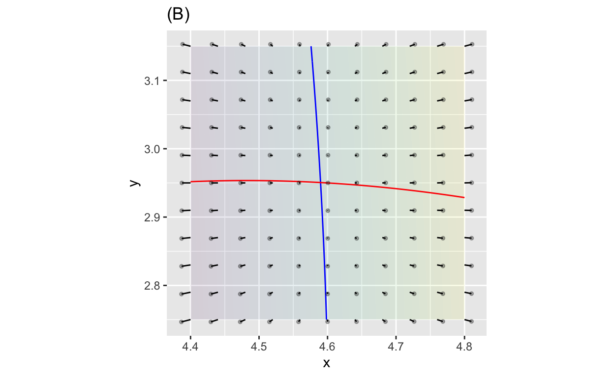
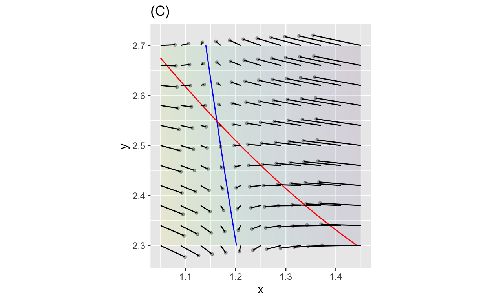
Here’s a system which has 4 fixed points in the region shown.
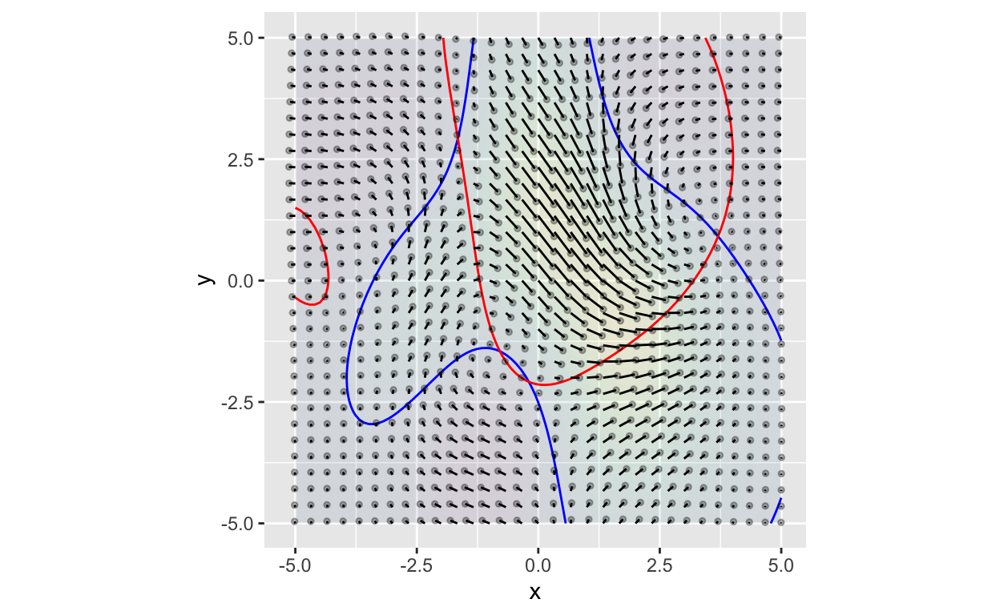 Plots (D) and (E) zoom in on two regions.
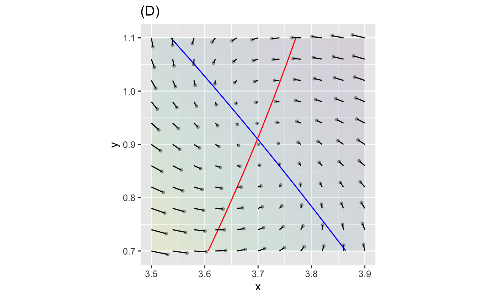
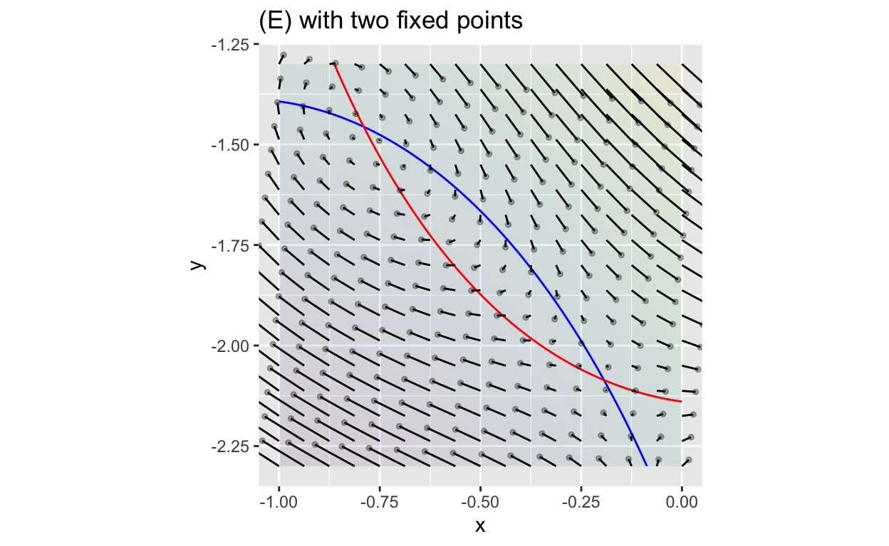
Let’s look a little more closely at the upper-left fixed point in graph (E):
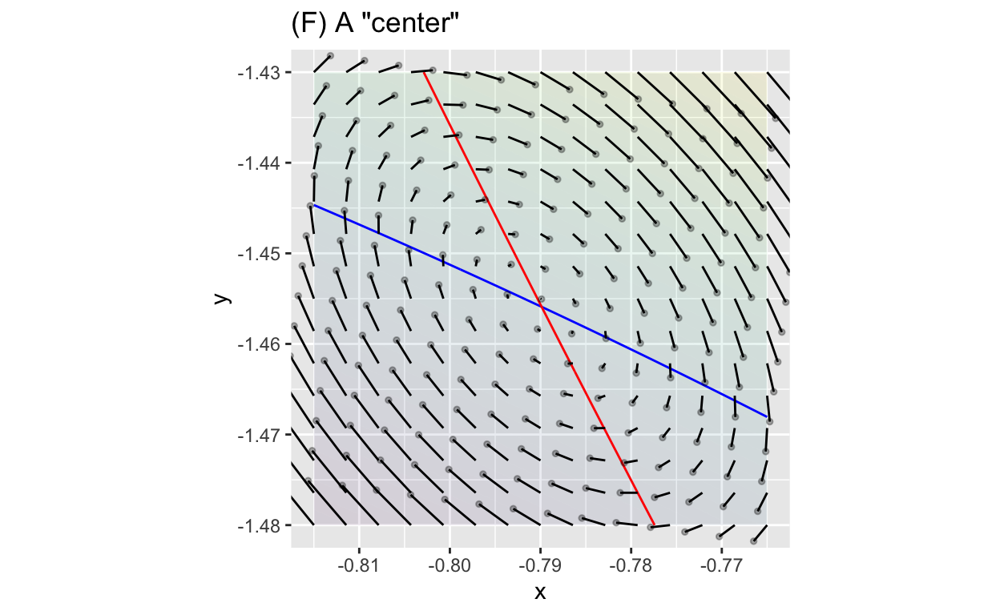
The pattern in figure (F) is clockwise rotation around the fixed point. This kind of pattern is of fundamental importance in physics and engineering.
Consider a tuning fork as an example of a dynamical system. Ordinarily it’s in equilibrium: silent. But after you tap it, it rings, the ringing dying out over time. The design and use of a turning fork is all about the transient vibrations as the fork returns to equilibrium, its fixed point.
We are going to focus on a small but important part of dynamics: the behavior near a fixed point. Up until now, we’ve considered only stability or instability. But now we want to know a bit more, about the behavior of the transient approaching near a stable fixed point or the escape from near an unstable one.
We’re going to use an approach that’s familiar in calculus: zoom in on the region very close to fixed points.
“Very close” can mean different things to different people. In calculus, very close is often taken to mean, “so close that the system is well approximated as a linear system.” That is, instead of looking at general, nonlinear functions of the dynamics, we’re going to look only at dynamics involving linear functions. The system we are going to study will be this one: \[\xi_{n+1} = \mu + \alpha\, \xi_n + \beta\, \eta_n\\ \eta_{n+1} = \nu + \gamma\, \xi_n + \delta\, \eta_n\]
Where \(\alpha, \beta, \gamma, \delta, \nu, \mu\) are all constant scalars, and \(\xi\) (“ex-eee”, Greek for x) and \(\eta\) (“ay-tah”, Greek for \(y\)).
There is a lot of Greek in the above equation, but don’t let it worry you. That’s because we’re going to simplify things even more.
Since we’re interested in behavior near a fixed point \((\xi^\star, \eta^\star)\), we’ll define new state variables that are centered on the fixed point: \[x = \xi - \xi^\star\\ y = \eta - \eta^\star\] In terms of \(x\) and \(y\), the fixed point is at \((0,0)\).
The dynamics near this stable fixed point now become: \[x_{n+1} = a x_n + b y_n\\ y_{n+1} = c x_n + d y_n\]
We don’t need terms like \(\mu\) and \(\nu\) in the \((\xi, \eta)\) system, because when \((x_n = 0, y_n=0)\) both \(x_{n+1}\) and \(y_{n+1}\) will be zero: a fixed point at \((0,0)\)!
It’s just the four parameters \(a, b, c\), and \(d\) that shape the dynamics. It can be handy to adopt a vector/matrix notation to highlight the role of the four parameters without distracting from all the \(x_n\) and \(y_n\) notation. Do do this, we’ll put \(x_n\) and \(y_n\) into a single vector, which we’ll call \({\mathbf x}_n\). (Note the boldface x to signify that it is a vector, rather than a scalar wich is written unbolded, \(x\).) \[ \left[ \begin{array}{c}x_{n+1}\\y_{n+1}\end{array} \right] \equiv\ \ \ \ {\mathbf x}_{n+1} = \left[ \begin{array}{cc}a & b\\c & d\end{array} \right] {\mathbf x}_n \ \ \ \ \equiv \left[ \begin{array}{c}a x_{n} + by_n\\c x_n + d y_{n}\end{array} \right] \] It’s important to remember that writing the dynamics as \[{\mathbf x}_{n+1} = \left[ \begin{array}{cc}a & b\\c & d\end{array} \right] {\mathbf x}_n\] doesn’t change anything about the dynamics, it’s just a more compact notation.
We could simplify even more by giving a name to the [abcd] matrix, like this: \[{\mathbf x}_{n+1} = {\mathbf A}\cdot {\mathbf x}_n\] But we’ll be wanting to look at the role played by each of the four parameters \(a, b, c\), and \(d\), so we’ll continue to write out the matrix components.
The price we pay for limiting ourselves to linear dynamics is that we can’t necessarily describe the global behavior of dynamics, just the behavior in a small locale. It turns out in science and engineering that this is often all that we need. (We’ll look at some dynamical models that rely on nonlinearity in future days.)
It may seem in the distant past, but try to recall some of the concepts we used in exploring linear combinations.
\[{\mathbf M} =\left[\begin{array}{rrr}3 & 1 & 0\\-1 & 4 & -2\\8 & 0 & 12\end{array}\right]\ \ \ \mbox{or}\ \ \ {\mathbf P} =\left[\begin{array}{rr}-1 & 2\\7 & 0\end{array}\right]\]
\[{\mathbf P}\cdot{\mathbf u} = \left[\begin{array}{rr}-1 & 2\\7 & 0\end{array}\right] \cdot \left[\begin{array}{r}2\\-3\end{array}\right] = 2 \left[\begin{array}{r}-1\\7\end{array}\right] + -3 \left[\begin{array}{r}2\\0\end{array}\right] = \left[\begin{array}{r}-7\\14\end{array}\right]\]
There’s a simplification of the [abcd]-style matrix that is particularly important in the way dynamics are written in physics and related disciplines. That matrix has the form \[\left[\begin{array}{cc}a & b\\1 & 0\end{array}\right]\] We’ll call this an [ab10]-format matrix.
It’s worth emphasizing the special form of the equations corresponding to an [ab10] matrix:
\[\underbrace{\left[\begin{array}{c}x_{n+1}\\y_{n+1}\end{array}\right]}_\mbox{next state} = \underbrace{\left[\begin{array}{rr}a & b\\1 & 0\end{array}\right]}_\mbox{[ab10] format matrix} \cdot\underbrace{\left[\begin{array}{c}x_n\\y_n\end{array}\right]}_\mbox{current state} = \left[\begin{array}{rcr}a\, x_n & + & b\, y_n \\x_n & & \end{array}\right]\] Since both \(x_n\) and \(y_n\) are numerical quantities, you’ll often work with the system like this:
\[\underbrace{\left[\begin{array}{c}x_{n+1}\\y_{n+1}\end{array}\right]}_\mbox{next state} = \underbrace{\left[\begin{array}{rr}a & b\\1 & 0\end{array}\right]}_\mbox{[ab10] format matrix} \cdot\underbrace{\left[\begin{array}{r}3\\-1\end{array}\right]}_\mbox{current state} = \left[\begin{array}{rcr}3 a & + & (-1)b \\3 & & \end{array}\right]\]
Recall the medieval math problem about rabbits, which we wrote as a dynamical system \[x_{n+1} = x_n + y_n\\y_{n+1} = x_n \ \ \ \ \ \ \ \ \ \]
Rewrite this system in matrix form \[{\mathbf x}_{n+1} = {\mathbf A} \cdot {\mathbf x}_n\ \ \ \mbox{where}\ \ {\mathbf x}_n \equiv \left[\begin{array}{c}x_n\\y_n\end{array}\right]\]
Here are several candidates for the matrix \({\mathbf A}\) that implements the rabbit dynamics:
\[{\mathbf A}_1 \equiv \left[\begin{array}{cc}1 & 1 \\ 0 & 1\end{array}\right], \ \ {\mathbf A}_2 \equiv \left[\begin{array}{cc}1 & 0 \\ 0 & 1\end{array}\right], \ \ {\mathbf A}_3 \equiv \left[\begin{array}{cc}1 & 0 \\ 1 & 1\end{array}\right], \\ {\mathbf A}_4 \equiv \left[\begin{array}{cc}1 & 1 \\ 1 & 1\end{array}\right], \ \ {\mathbf A}_5 \equiv \left[\begin{array}{cc}1 & 1 \\ 1 & 0\end{array}\right], \ \ {\mathbf A}_6 \equiv \left[\begin{array}{cc}1 & 0 \\ 1 & 0\end{array}\right]\ \]
If you want to iterate the system \({\mathbf x}_{n+1} = {\mathbf A}\, {\mathbf x}_n\), you can use the Iterate() operator, handing it the matrix \({\mathbf A}\) as argument \(A=\).
Use the sandbox to create a matrix named A corresponding to the rabbit dynamics from the initial condition \((1, 0)\). (Note: the matrix that’s given by default is just a placeholder. It’s not the correct rabbit-dynamics matrix.)
# enter your matrix here
A <- matrix(c(0.5, 1, 1, 0), nrow=2, byrow=TRUE)
A # print the matrix so you can confirm you have it right
Iterate(A = A, x0 = c(1, 0), n=10)Once you have your matrix \({\mathbf A}\) correctly defined for the rabbit dynamics, and have confirmed the trajectory is what it should be, replace the initial condition (1, 0) with this one: (0.5247311, -0.8506508)
That’s a funny initial condition for modeling rabbits, because you can’t have fractional rabbits and especially you can’t have negative rabbits. But that initial condition—even if it’s not about rabbits—produces a very special kind of dynamics.
This behavior may seem strange now. You’ll understand it better when we introduce a powerful way of looking at matrix dynamics: eigenvalues and eigenvectors.
Location: CalcZ/_DailyDigitals/DailyDocuments/inst/DD-142Z-17/142Z-DD-17.Rmd DD-142Z-17